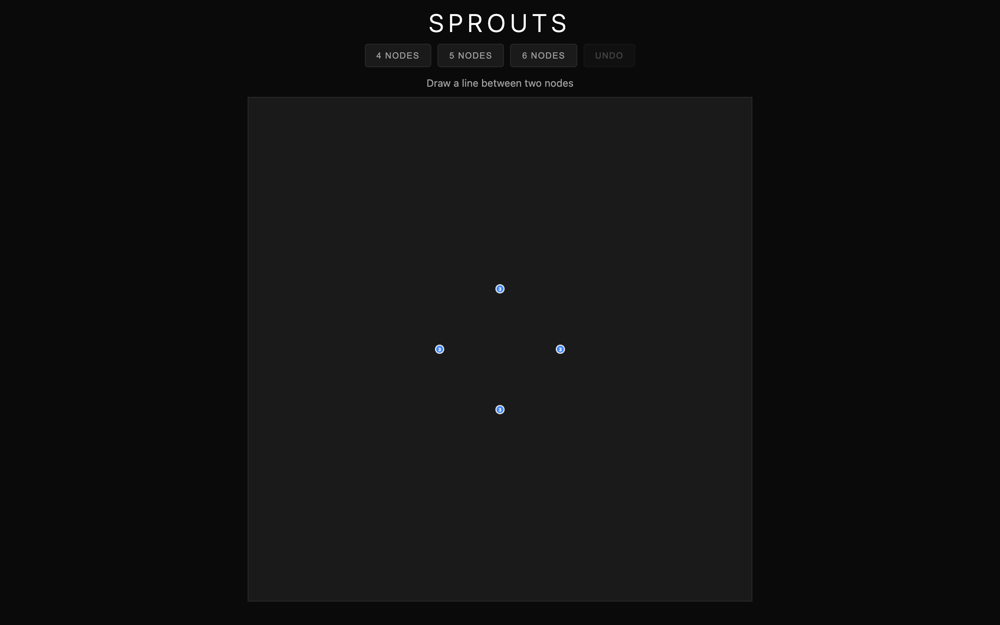

Sprouts is a pen-and-paper game that John Conway and Michael Paterson invented in 1967. You start with a few dots on a page. Players take turns drawing a curve between two dots (or from a dot back to itself), then placing a new dot somewhere along the curve they just drew. Each dot can have at most three lines touching it, and lines are not allowed to cross. The last player who can make a legal move wins.
The rules fit on an index card but the game is surprisingly deep. For small numbers of starting dots, determining the winner is a solved problem in combinatorial game theory, but the proofs are non-trivial and the general case is still open. I wanted to play it against a computer, and building that computer opponent turned out to be harder than the game itself.

{kind=link}
The problem with continuous moves
In most board games, a move is something discrete: pick up a piece, put it down on a square. The game engine can enumerate all legal moves and check them against a list. Sprouts doesn't work this way. A move is a freeform curve drawn in the plane, and its legality depends on whether that curve intersects any existing geometry. There's no grid. The move space is continuous.
My first approach to checking move legality was to sample the curve at many points and test each sample for collisions with existing lines. This was slow and unreliable. Curves that passed close to existing lines but didn't cross them would sometimes register as collisions depending on sampling density, and actual crossings could slip through gaps between samples. I needed a different approach.
Morphological skeletons
The solution came from image processing. Think of the game board as a binary image: existing lines and dots are obstacles, and everything else is free space. If you apply morphological thinning to the free space, you get a medial axis, a one-pixel-wide skeleton that runs through the center of every open corridor on the board. This skeleton is a map of where valid moves can exist.
The thinning uses the Zhang-Suen algorithm, which iterates over the image removing boundary pixels that satisfy certain connectivity conditions. After thinning, what remains is the skeleton: a graph of corridors through free space.
Before thinning, there's an adaptive dilation step. Wide open areas get heavy dilation, which forces the skeleton toward the center of those areas. Narrow passages get light dilation so they don't collapse entirely. The dilation amount is determined by a local distance transform that estimates corridor width at each point. This adaptive approach matters a lot in the endgame, when the board is crowded and remaining free space is a collection of thin, winding channels. Without adaptive dilation, the skeleton would either miss narrow passages or produce a skeleton so far from the center of wide areas that it suggests moves too close to existing lines.
When the skeleton approach fails (and in very tight endgame positions it does), a fallback A* pathfinder operates in the raw free space with relaxed constraints. The fallback is slower but can find paths that the skeleton misses.

_(2).jpg){kind=link}
The AI
Move generation works by pathfinding along the skeleton between every pair of nodes that could legally be connected (accounting for the three-connection limit). For each pair, the AI attempts to find a skeleton path first, then tries the relaxed pathfinder if that fails. Each successful path becomes a candidate move. The AI also considers self-connections (curves from a node back to itself) for nodes with two or fewer existing connections.
The search uses minimax with alpha-beta pruning at two plies of depth. The tricky part is that the search tree operates on abstract graph representations of the game state, but the actual moves need to be concrete pixel-level curves. The AI generates concrete curves, abstracts them into graph operations for the minimax evaluation, then returns the concrete curve of the best move for rendering.
There's an opening book for the first few moves. Early-game strong plays in Sprouts are well-studied and don't need to be recomputed every time.
When the AI draws a curve, it also needs to decide where on that curve to place the new dot. The heuristic samples the middle 80% of the curve (avoiding the endpoints, which are close to existing nodes) and picks the point with the greatest minimum distance to any existing obstacle. The idea is to preserve as much open space as possible for future moves, preventing the AI from accidentally walling itself off.
Putting it together
The game logic and AI are written in Rust, compiled to WebAssembly. The WASM module runs in a Web Worker so that the AI's computation (which can take a few seconds on larger boards) doesn't block the UI thread. The frontend uses HTML5 Canvas for rendering and handles both mouse and touch input, since Sprouts is the kind of game you might play on a phone.
Difficulty is controlled by the number of starting nodes: 4, 5, or 6. More starting nodes means a longer game with a larger and more complex move space. At 6 nodes the AI takes noticeably longer to think, because the number of candidate moves grows quickly and the skeleton computation is more expensive on a crowded board.
The visual design is dark and minimal: near-black background, white lines, green accent for victories and red for losses. The board itself is the interesting visual, and a busy UI would compete with it.